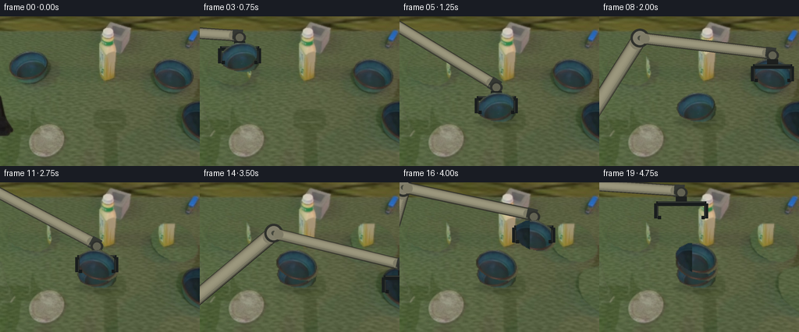
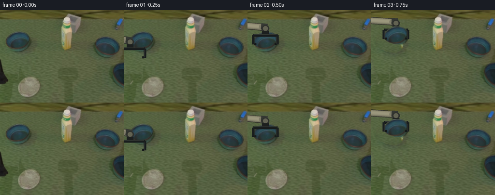
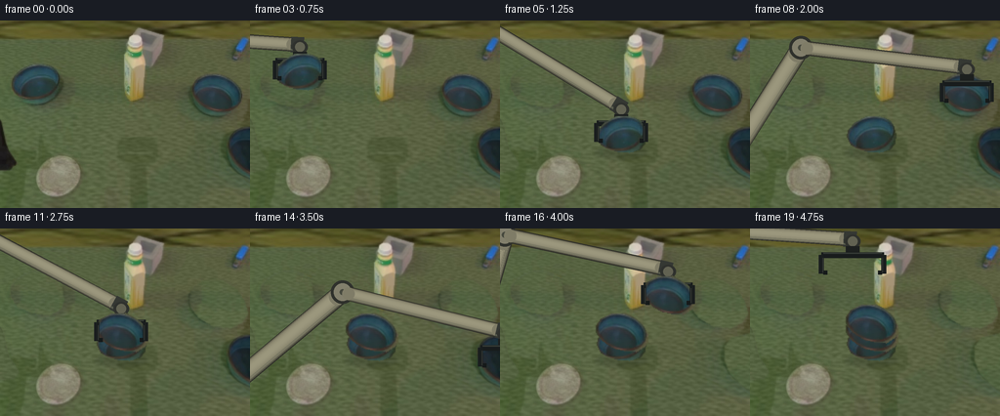
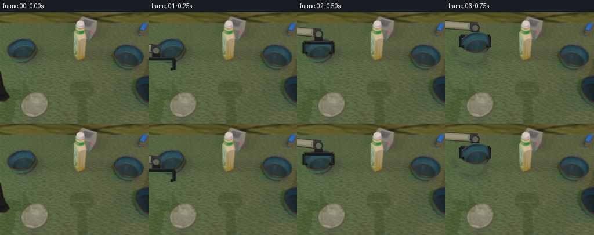

CODING AGENTS AS PIXEL WORLD MODELS
traex/GPT-6.1-Sol · common50_0046
点击播放 · 原生 RGB 像素
逐轮保存的候选
回放视频、检查图与代码变化。
每份候选均可单独播放。实际图片检查记录在下方工具轨迹中。
候选 01播放与检查图
点击播放 · 原生 RGB 像素


展开代码变化
--- 上一保存版本
+++ 本次保存版本
@@ -0,0 +1,212 @@
+from pathlib import Path
+import math
+import numpy as np
+from PIL import Image, ImageDraw, ImageFilter
+from artifact_io import save
+
+ROOT = Path(__file__).resolve().parent
+SRC = np.array(Image.open(ROOT / 'first_frame.png').convert('RGB'))
+W,H=256,192
+S=3
+
+def polygon_mask(points, blur=0):
+ m=Image.new('L',(W,H),0)
+ ImageDraw.Draw(m).polygon(points,fill=255)
+ if blur: m=m.filter(ImageFilter.GaussianBlur(blur))
+ return np.array(m,dtype=np.float32)/255
+
+# Object contours obtained from local RGB coordinates. They include the contact
+# shadows, so removing a lifted object does not leave a ghost on the table.
+CLEAR=[
+ [(33,43),(48,44),(57,48),(63,57),(65,73),(62,82),(50,89),(31,86),(18,80),(11,69),(11,60),(17,52),(25,47)],
+ [(208,53),(228,53),(242,62),(250,74),(253,87),(247,96),(235,102),(218,100),(203,91),(195,80),(193,67),(200,58)],
+ [(255,107),(237,111),(230,120),(230,135),(235,148),(245,158),(255,165),(266,165),(275,110)]
+]
+BODY=[
+ [(31,45),(45,44),(55,48),(59,53),(62,63),(61,73),(56,79),(45,82),(33,81),(23,78),(16,74),(12,66),(13,59),(20,51)],
+ [(211,55),(226,54),(236,59),(244,66),(249,76),(249,84),(245,89),(237,94),(225,93),(216,91),(207,86),(201,81),(196,74),(196,67),(201,60)]
+]
+CENTERS=[(37.,63.),(222.,75.),(261.,133.)]
+
+# Extract true textured bowl surfaces. The source's lighting is retained.
+def extract(poly, box):
+ x0,y0,x1,y1=box
+ full=polygon_mask(poly)
+ mask=Image.fromarray(np.uint8(full*255)).filter(ImageFilter.GaussianBlur(.35))
+ rgb=Image.fromarray(SRC[y0:y1,x0:x1])
+ rgb.putalpha(mask.crop(box))
+ return rgb,(x0,y0)
+B0,off0=extract(BODY[0],(10,42,65,85))
+B1,off1=extract(BODY[1],(193,52,253,98))
+
+# The third bowl starts partly outside the view. Preserve its visible pixels and
+# complete the unseen side using the identical, already-observed bowl.
+B2=B1.copy()
+a=np.array(B2)
+# Translation aligns the third silhouette with the right bowl silhouette.
+for yy in range(a.shape[0]):
+ for xx in range(a.shape[1]):
+ x=xx+232;y=yy+110
+ if 0<=x<W and 0<=y<H:
+ a[yy,xx,:3]=SRC[y,x]
+B2=Image.fromarray(a)
+ASSETS=[(B0,off0,CENTERS[0]),(B1,off1,CENTERS[1]),(B2,(232,110),CENTERS[2])]
+
+# Local background reconstruction: borrow real neighboring green surface pixels
+# at the same depth, preserving its illumination and grain without new assets.
+def clean_region(base, poly, shift):
+ mask=polygon_mask(poly,.8)
+ donor=np.roll(SRC,shift,axis=1).astype(float)
+ # Match the small horizontal color/illumination gradient in the tabletop.
+ target=np.array([85,99,65.],float)
+ sel=(mask>.7)&(np.indices(mask.shape)[0]>22)
+ if sel.any():
+ med=np.median(donor[sel],axis=0)
+ donor+=np.clip(target-med,-5,5)
+ return np.clip(base*(1-mask[...,None])+donor*mask[...,None],0,255).astype('uint8')
+
+CLEAN=SRC.copy()
+for poly,shift in zip(CLEAR,[-67,76,64]):CLEAN=clean_region(CLEAN,poly,shift)
+# The initial black hand is at the left border. It leaves the view of those pixels
+# when the arm begins reaching. The other stationary workspace details stay put.
+HAND_CLEAR=[(0,101),(4,109),(5,120),(9,132),(16,142),(19,147),(14,153),(5,155),(0,154)]
+NO_HAND=clean_region(SRC,HAND_CLEAR,-26)
+CLEAN=clean_region(CLEAN,HAND_CLEAR,-26)
+
+# Each tuple is the bowl's projected centre and its height above the table.
+# Contact phases occur at 5, 11, and 17; release and withdrawal have their own frames.
+TARGET=(124.,116.)
+seq0={0:(37,63,0),1:(37,63,0),2:(37,63,0),3:(51,52,18),4:(96,65,28),5:(124,116,0)}
+seq1={7:(222,75,0),8:(222,75,0),9:(207,56,21),10:(155,65,31),11:(124,107,0)}
+seq2={13:(261,133,0),14:(261,133,0),15:(235,87,28),16:(172,69,36),17:(124,98,0)}
+
+def bowl_state(i,f):
+ if i==0:
+ if f<=5:return seq0[f]
+ return (124,116,0)
+ if i==1:
+ if f<7:return (222,75,0)
+ if f<=11:return seq1[f]
+ return (124,107,0)
+ if f<13:return (261,133,0)
+ if f<=17:return seq2[f]
+ return (124,98,0)
+
+# The gripper is a rigid parallel-jaw tool. Its transverse width changes only
+# when the jaws open, never while a bowl is being transported.
+# hand centre coordinates correspond to the bowl upper opening.
+HANDS=[(-12,130,31),(13,91,31),(37,63,25),(51,52,25),(96,65,25),(124,116,25),
+ (132,83,32),(197,77,32),(222,75,25),(207,56,25),(155,65,25),(124,107,25),
+ (145,68,32),(238,134,32),(261,133,25),(235,87,25),(172,69,25),(124,98,25),
+ (124,71,32),(105,38,32)]
+
+
+def p(pt):return tuple(float(v*S) for v in pt)
+def line(draw,pts,fill,width):draw.line([p(q) for q in pts],fill=fill,width=max(1,int(width*S)),joint='curve')
+def ellipse(draw,box,fill,outline=None,width=1):draw.ellipse(tuple(float(v*S) for v in box),fill=fill,outline=outline,width=int(width*S))
+def poly(draw,pts,fill):draw.polygon([p(q) for q in pts],fill=fill)
+
+# Two fixed-length links with a fixed base outside the left side of the camera.
+# Analytic inverse kinematics produces rigid rotation at each joint.
+BASE=np.array([-47.,184.]);L1=185.;L2=171.
+def elbow(wrist):
+ d=wrist-BASE;dist=np.linalg.norm(d);u=d/dist
+ q=(L1*L1-L2*L2+dist*dist)/(2*dist)
+ hh=math.sqrt(max(0,L1*L1-q*q))
+ normal=np.array([-u[1],u[0]])
+ return BASE+q*u-hh*normal
+
+# Rounded bevels and fixed silhouettes give the dim cream robot links depth.
+def link(draw,a,b,width):
+ a=np.array(a);b=np.array(b);u=(b-a)/np.linalg.norm(b-a);n=np.array([-u[1],u[0]])
+ a=a+u*6;b=b-u*7
+ line(draw,[a,b],(48,48,41),width+2)
+ for t in np.linspace(-1,1,20):
+ offset=t*width*.47
+ bright=math.sqrt(max(0,1-t*t))
+ c=np.array([95,93,76])+bright*np.array([60,58,49])-t*np.array([10,9,7])
+ line(draw,[a+n*offset,b+n*offset],tuple(np.uint8(c)),width/19+1/S)
+ # narrow longitudinal seam, fixed to the side of the rigid casting
+ line(draw,[a+n*width*.31,b+n*width*.31],(104,103,87),.45)
+ for q in [a,b]:
+ ellipse(draw,(q[0]-width*.49,q[1]-width*.49,q[0]+width*.49,q[1]+width*.49),(127,124,103))
+
+
+def robot_parts(hx,hy,opening):
+ wrist=np.array([hx,hy-27.])
+ el=elbow(wrist)
+ back=Image.new('RGBA',(W*S,H*S),(0,0,0,0));d=ImageDraw.Draw(back)
+ # upper arm, elbow bearing, lower arm, wrist coupling
+ link(d,BASE,el,18)
+ ellipse(d,(el[0]-12,el[1]-12,el[0]+12,el[1]+12),(47,49,44))
+ ellipse(d,(el[0]-9,el[1]-9,el[0]+9,el[1]+9),(130,127,108))
+ ellipse(d,(el[0]-3,el[1]-3,el[0]+3,el[1]+3),(71,73,62))
+ link(d,el,wrist,13)
+ u=(wrist-el)/np.linalg.norm(wrist-el);n=np.array([-u[1],u[0]])
+ a=wrist-u*9;b=wrist+u*4
+ poly(d,[a+n*8,b+n*8,b-n*8,a-n*8],(53,56,51))
+ line(d,[a+n*5,b+n*5],(90,93,78),2)
+ # wrist rotates so the bowl stays horizontal throughout the pickup.
+ ellipse(d,(hx-8,hy-32,hx+8,hy-18),(47,49,45))
+ ellipse(d,(hx-5,hy-30,hx+5,hy-20),(98,98,82))
+ poly(d,[(hx-7,hy-20),(hx+7,hy-20),(hx+7,hy-13),(hx-7,hy-13)],(29,32,31))
+ # palm and transverse actuator live behind the front edge of the bowl.
+ line(d,[(hx-opening,hy-11),(hx+opening,hy-11)],(24,28,28),6)
+ line(d,[(hx-opening+2,hy-13),(hx+opening-2,hy-13)],(54,59,54),1.6)
+ # sides descend past the lip; inward pads support the bowl, not its centre.
+ front=Image.new('RGBA',(W*S,H*S),(0,0,0,0));fd=ImageDraw.Draw(front)
+ for side in [-1,1]:
+ x=hx+side*opening
+ poly(fd,[(x-2.5,hy-11),(x+2.5,hy-11),(x+2.5,hy+8),(x-2.5,hy+8)],(26,30,30))
+ line(fd,[(x-side*1.4,hy-8),(x-side*1.4,hy+7)],(62,66,60),.9)
+ poly(fd,[(x-side*2,hy+5),(x-side*6,hy+5),(x-side*6,hy+9),(x-side*2,hy+9)],(22,26,26))
+ return back,front
+
+
+def add_bowl(canvas,i,state):
+ x,y,z=state
+ asset,off,origin=ASSETS[i]
+ # Translation of the observed rigid bowl surface, at the fixed camera scale.
+ dx=x-origin[0];dy=y-origin[1]
+ tile=asset.resize((asset.width*S,asset.height*S),Image.Resampling.BICUBIC)
+ canvas.alpha_composite(tile,(round((off[0]+dx)*S),round((off[1]+dy)*S)))
+
+
+def contact_shadow(canvas,x,y,alpha=50,rx=27,ry=10):
+ layer=Image.new('RGBA',(W*S,H*S),(0,0,0,0));d=ImageDraw.Draw(layer)
+ ellipse(d,(x-rx,y-ry,x+rx,y+ry),(17,25,17,alpha))
+ layer=layer.filter(ImageFilter.GaussianBlur(2*S))
+ canvas.alpha_composite(layer)
+
+frames=[]
+for f in range(20):
+ if f==0:
+ frames.append(SRC.copy());continue
+ # Keep not-yet-picked objects pixel-identical, including their real shadows.
+ bg=NO_HAND.copy()
+ for i,start in enumerate([3,9,15]):
+ if f>=start:bg=clean_region(bg,CLEAR[i],[-67,76,64][i])
+ canvas=Image.fromarray(bg).convert('RGBA').resize((W*S,H*S),Image.Resampling.NEAREST)
+ # Physically grounded stack with a single persistent table shadow.
+ if f>=3:
+ x,y,z=bowl_state(0,f)
+ contact_shadow(canvas,x,y+19+z,alpha=int(48/(1+z/18)),ry=7+z*.08)
+ for i,st in [(1,9),(2,15)]:
+ if f>=st and f<[12,18][i-1]:
+ x,y,z=bowl_state(i,f)
+ if z:contact_shadow(canvas,x,y+19+z,alpha=int(33/(1+z/15)))
+ # Arm is above the tabletop but below the held object's front contour.
+ hx,hy,op=HANDS[f]
+ back,front=robot_parts(hx,hy,op)
+ canvas.alpha_composite(back)
+ # Lower bowl first, then successively higher bowls: natural nesting occlusion.
+ for i,start in enumerate([3,9,15]):
+ if f>=start:add_bowl(canvas,i,bowl_state(i,f))
+ canvas.alpha_composite(front)
+ frame=np.array(canvas.convert('RGB').resize((W,H),Image.Resampling.LANCZOS))
+ frames.append(frame)
+frames=np.stack(frames).astype(np.uint8)
+assert np.array_equal(frames[0],SRC)
+save(frames,ROOT)
+np.save(ROOT/'generated_rgb.npy',frames)
+print('Saved',frames.shape,frames.dtype)
候选 02播放与检查图
点击播放 · 原生 RGB 像素

展开代码变化
--- 上一保存版本
+++ 本次保存版本
@@ -42,14 +42,6 @@
# The third bowl starts partly outside the view. Preserve its visible pixels and
# complete the unseen side using the identical, already-observed bowl.
B2=B1.copy()
-a=np.array(B2)
-# Translation aligns the third silhouette with the right bowl silhouette.
-for yy in range(a.shape[0]):
- for xx in range(a.shape[1]):
- x=xx+232;y=yy+110
- if 0<=x<W and 0<=y<H:
- a[yy,xx,:3]=SRC[y,x]
-B2=Image.fromarray(a)
ASSETS=[(B0,off0,CENTERS[0]),(B1,off1,CENTERS[1]),(B2,(232,110),CENTERS[2])]
# Local background reconstruction: borrow real neighboring green surface pixels
@@ -66,12 +58,12 @@
return np.clip(base*(1-mask[...,None])+donor*mask[...,None],0,255).astype('uint8')
CLEAN=SRC.copy()
-for poly,shift in zip(CLEAR,[-67,76,64]):CLEAN=clean_region(CLEAN,poly,shift)
+for poly,shift in zip(CLEAR,[-56,130,64]):CLEAN=clean_region(CLEAN,poly,shift)
# The initial black hand is at the left border. It leaves the view of those pixels
# when the arm begins reaching. The other stationary workspace details stay put.
HAND_CLEAR=[(0,101),(4,109),(5,120),(9,132),(16,142),(19,147),(14,153),(5,155),(0,154)]
-NO_HAND=clean_region(SRC,HAND_CLEAR,-26)
-CLEAN=clean_region(CLEAN,HAND_CLEAR,-26)
+NO_HAND=clean_region(SRC,HAND_CLEAR,-90)
+CLEAN=clean_region(CLEAN,HAND_CLEAR,-90)
# Each tuple is the bowl's projected centre and its height above the table.
# Contact phases occur at 5, 11, and 17; release and withdrawal have their own frames.
@@ -185,7 +177,7 @@
# Keep not-yet-picked objects pixel-identical, including their real shadows.
bg=NO_HAND.copy()
for i,start in enumerate([3,9,15]):
- if f>=start:bg=clean_region(bg,CLEAR[i],[-67,76,64][i])
+ if f>=start:bg=clean_region(bg,CLEAR[i],[-56,130,64][i])
canvas=Image.fromarray(bg).convert('RGBA').resize((W*S,H*S),Image.Resampling.NEAREST)
# Physically grounded stack with a single persistent table shadow.
if f>=3:
候选 03播放与检查图
点击播放 · 原生 RGB 像素


展开代码变化
--- 上一保存版本
+++ 本次保存版本
@@ -39,8 +39,9 @@
B0,off0=extract(BODY[0],(10,42,65,85))
B1,off1=extract(BODY[1],(193,52,253,98))
-# The third bowl starts partly outside the view. Preserve its visible pixels and
-# complete the unseen side using the identical, already-observed bowl.
+# The third bowl starts partly outside the view; its unseen side is completed
+# with the identical observed bowl. Its original visible pixels remain untouched
+# until it is picked up and transported into the camera view.
B2=B1.copy()
ASSETS=[(B0,off0,CENTERS[0]),(B1,off1,CENTERS[1]),(B2,(232,110),CENTERS[2])]
@@ -57,13 +58,10 @@
donor+=np.clip(target-med,-5,5)
return np.clip(base*(1-mask[...,None])+donor*mask[...,None],0,255).astype('uint8')
-CLEAN=SRC.copy()
-for poly,shift in zip(CLEAR,[-56,130,64]):CLEAN=clean_region(CLEAN,poly,shift)
# The initial black hand is at the left border. It leaves the view of those pixels
# when the arm begins reaching. The other stationary workspace details stay put.
HAND_CLEAR=[(0,101),(4,109),(5,120),(9,132),(16,142),(19,147),(14,153),(5,155),(0,154)]
NO_HAND=clean_region(SRC,HAND_CLEAR,-90)
-CLEAN=clean_region(CLEAN,HAND_CLEAR,-90)
# Each tuple is the bowl's projected centre and its height above the table.
# Contact phases occur at 5, 11, and 17; release and withdrawal have their own frames.
可观测工具轨迹
实际执行的命令与返回图片。
命令 1exit 0
/bin/bash -lc 'ls -la; cat prompt.txt; cat GENERATION_RULES.md'
命令 2exit 0
/bin/bash -lc "cat task_spec.json; cat artifact_io.py; python - <<'PY'
from PIL import Image
import numpy as np
im=np.array(Image.open('first_frame.png').convert('RGB'))
print(im.shape)
# quantized color map ascii
small=np.array(Image.fromarray(im).resize((80,60)))
for row in small:
s=''
for r,g,b in row.astype(int):
if max(r,g,b)<45: c='#'
elif max(r,g,b)-min(r,g,b)<20: c='.' if r>185 else ':' if r>120 else '+' if r>65 else '#'
elif g>r*1.25 and g>b*1.2: c='G'
elif b>r*1.25 and g>r*1.2: c='B'
elif r>g*1.4 and r>b*1.4: c='R'
elif r>g*1.2 and b>g*1.05: c='P'
elif r>g*1.05 and g>b*1.25: c='y'
else:c='o'
s+=c
print(s)
print('colors',Image.fromarray(im).quantize(colors=16).getpalette()[:48])
PY"命令 3exit 0
/bin/bash -lc "python - <<'PY'
from PIL import Image
import numpy as np
from scipy import ndimage
im=np.array(Image.open('first_frame.png').convert('RGB'));a=im.astype(float);r,g,b=a.transpose(2,0,1)
for name,m in [('blue',(b>r*1.25)&(g>r*1.15)&(b>g*.85)),('dark',a.max(2)<40),('bright',a.max(2)>140),('gray',(a.max(2)-a.min(2)<20)&(a.max(2)>60))]:
lab,n=ndimage.label(m)
print(name,'pixels',m.sum())
for k in sorted(range(1,n+1),key=lambda k:(lab==k).sum(),reverse=True)[:12]:
yy,xx=np.where(lab==k); print(len(xx),(xx.min(),yy.min(),xx.max(),yy.max()),np.round(a[yy,xx].mean(0),1))
print('coordinate samples')
for y in range(0,192,8):
print(y,' '.join('%d:%02x%02x%02x'%(x,*im[y,x]) for x in range(0,256,16)))
PY"命令 4exit 0
/bin/bash -lc "python - <<'PY'
from PIL import Image
import numpy as np
from scipy import ndimage
im=np.array(Image.open('first_frame.png')).astype(int)
regions=[(120,0,175,90),(8,40,66,87),(195,49,252,101),(0,98,22,158),(34,139,85,182)]
for x0,y0,x1,y1 in regions:
print('\\nREGION',x0,y0,x1,y1,'every2 pixels')
for y in range(y0,y1,2):
s=''
for x in range(x0,x1,1):
r,g,b=im[y,x];v=max(r,g,b)
if b>r*1.2 and g>r*1.1: c='B' if v>65 else 'b'
elif g>r*1.13 and g>b*1.16: c=',' if v>65 else '_'
elif v<42:c='#'
elif v>200: c='W'
elif v>155:c='O'
elif v>125:c='o'
elif v>100:c='*'
elif v>80:c=':'
elif v>60:c='-'
else:c='+'
s+=c
print('%3d'%y,s)
PY"命令 5exit 0
/bin/bash -lc "python - <<'PY'
from PIL import Image
import numpy as np
im=np.array(Image.open('first_frame.png')).astype(int)
# A high-detail numeric color-based map of top arm. Quantize actual cropped colors, no image display.
x0,y0,x1,y1=120,4,171,85
crop=Image.fromarray(im[y0:y1,x0:x1].astype('uint8'));q=crop.quantize(colors=12); arr=np.array(q);p=np.array(q.getpalette()).reshape(-1,3)
for k in range(12):print(chr(65+k),p[k],(arr==k).sum())
for y in range(0,y1-y0):print('%02d'%(y+y0),''.join(chr(65+k) for k in arr[y]))
PY"命令 6exit 0
/bin/bash -lc "python - <<'PY'
import numpy as np
from PIL import Image
im=np.array(Image.open('first_frame.png'))
for x0,y0,x1,y1 in [(125,27,150,41),(36,140,83,181),(233,5,256,45)]:
q=Image.fromarray(im[y0:y1,x0:x1]).quantize(colors=10); a=np.array(q);p=np.array(q.getpalette()).reshape(-1,3)
print('crop',x0,y0)
for k in range(10):print(k, p[k])
for yy,row in enumerate(a):print(yy+y0,''.join(str(k) for k in row))
PY"命令 7exit 0
/bin/bash -lc "python - <<'PY'
from PIL import Image
import numpy as np
from scipy import ndimage
im=np.array(Image.open('first_frame.png')).astype(float)
for box in [(8,40,66,90),(194,50,254,102),(230,103,256,165)]:
x0,y0,x1,y1=box;c=im[y0:y1,x0:x1];r,g,b=c.transpose(2,0,1)
mask=((b>g*.86)&(b>r*.90))|((r+g+b)<148)
mask=ndimage.binary_closing(mask,iterations=1);mask=ndimage.binary_fill_holes(mask)
lab,n=ndimage.label(mask);sizes=np.bincount(lab.ravel());sizes[0]=0;mask=lab==sizes.argmax()
print('BOX',box)
for i in range(0,y1-y0,2):print(y0+i,''.join('#' if p else '.' for p in mask[i]))
PY"命令 8exit 0
/bin/bash -lc "cat > generate.py <<'PY'
from pathlib import Path
import math
import numpy as np
from PIL import Image, ImageDraw, ImageFilter
from artifact_io import save
ROOT = Path(__file__).resolve().parent
SRC = np.array(Image.open(ROOT / 'first_frame.png').convert('RGB'))
W,H=256,192
S=3
def polygon_mask(points, blur=0):
m=Image.new('L',(W,H),0)
ImageDraw.Draw(m).polygon(points,fill=255)
if blur: m=m.filter(ImageFilter.GaussianBlur(blur))
return np.array(m,dtype=np.float32)/255
# Object contours obtained from local RGB coordinates. They include the contact
# shadows, so removing a lifted object does not leave a ghost on the table.
CLEAR=[
[(33,43),(48,44),(57,48),(63,57),(65,73),(62,82),(50,89),(31,86),(18,80),(11,69),(11,60),(17,52),(25,47)],
[(208,53),(228,53),(242,62),(250,74),(253,87),(247,96),(235,102),(218,100),(203,91),(195,80),(193,67),(200,58)],
[(255,107),(237,111),(230,120),(230,135),(235,148),(245,158),(255,165),(266,165),(275,110)]
]
BODY=[
[(31,45),(45,44),(55,48),(59,53),(62,63),(61,73),(56,79),(45,82),(33,81),(23,78),(16,74),(12,66),(13,59),(20,51)],
[(211,55),(226,54),(236,59),(244,66),(249,76),(249,84),(245,89),(237,94),(225,93),(216,91),(207,86),(201,81),(196,74),(196,67),(201,60)]
]
CENTERS=[(37.,63.),(222.,75.),(261.,133.)]
# Extract true textured bowl surfaces. The source's lighting is retained.
def extract(poly, box):
x0,y0,x1,y1=box
full=polygon_mask(poly)
mask=Image.fromarray(np.uint8(full*255)).filter(ImageFilter.GaussianBlur(.35))
rgb=Image.fromarray(SRC[y0:y1,x0:x1])
rgb.putalpha(mask.crop(box))
return rgb,(x0,y0)
B0,off0=extract(BODY[0],(10,42,65,85))
B1,off1=extract(BODY[1],(193,52,253,98))
# The third bowl starts partly outside the view. Preserve its visible pixels and
# complete the unseen side using the identical, already-observed bowl.
B2=B1.copy()
a=np.array(B2)
# Translation aligns the third silhouette with the right bowl silhouette.
for yy in range(a.shape[0]):
for xx in range(a.shape[1]):
x=xx+232;y=yy+110
if 0<=x<W and 0<=y<H:
a[yy,xx,:3]=SRC[y,x]
B2=Image.fromarray(a)
ASSETS=[(B0,off0,CENTERS[0]),(B1,off1,CENTERS[1]),(B2,(232,110),CENTERS[2])]
# Local background reconstruction: borrow real neighboring green surface pixels
# at the same depth, preserving its illumination and grain without new assets.
def clean_region(base, poly, shift):
mask=polygon_mask(poly,.8)
donor=np.roll(SRC,shift,axis=1).astype(float)
# Match the small horizontal color/illumination gradient in the tabletop.
target=np.array([85,99,65.],float)
sel=(mask>.7)&(np.indices(mask.shape)[0]>22)
if sel.any():
med=np.median(donor[sel],axis=0)
donor+=np.clip(target-med,-5,5)
return np.clip(base*(1-mask[...,None])+donor*mask[...,None],0,255).astype('uint8')
CLEAN=SRC.copy()
for poly,shift in zip(CLEAR,[-67,76,64]):CLEAN=clean_region(CLEAN,poly,shift)
# The initial black hand is at the left border. It leaves the view of those pixels
# when the arm begins reaching. The other stationary workspace details stay put.
HAND_CLEAR=[(0,101),(4,109),(5,120),(9,132),(16,142),(19,147),(14,153),(5,155),(0,154)]
NO_HAND=clean_region(SRC,HAND_CLEAR,-26)
CLEAN=clean_region(CLEAN,HAND_CLEAR,-26)
# Each tuple is the bowl's projected centre and its height above the table.
# Contact phases occur at 5, 11, and 17; release and withdrawal have their own frames.
TARGET=(124.,116.)
seq0={0:(37,63,0),1:(37,63,0),2:(37,63,0),3:(51,52,18),4:(96,65,28),5:(124,116,0)}
seq1={7:(222,75,0),8:(222,75,0),9:(207,56,21),10:(155,65,31),11:(124,107,0)}
seq2={13:(261,133,0),14:(261,133,0),15:(235,87,28),16:(172,69,36),17:(124,98,0)}
def bowl_state(i,f):
if i==0:
if f<=5:return seq0[f]
return (124,116,0)
if i==1:
if f<7:return (222,75,0)
if f<=11:return seq1[f]
return (124,107,0)
if f<13:return (261,133,0)
if f<=17:return seq2[f]
return (124,98,0)
# The gripper is a rigid parallel-jaw tool. Its transverse width changes only
# when the jaws open, never while a bowl is being transported.
# hand centre coordinates correspond to the bowl upper opening.
HANDS=[(-12,130,31),(13,91,31),(37,63,25),(51,52,25),(96,65,25),(124,116,25),
(132,83,32),(197,77,32),(222,75,25),(207,56,25),(155,65,25),(124,107,25),
(145,68,32),(238,134,32),(261,133,25),(235,87,25),(172,69,25),(124,98,25),
(124,71,32),(105,38,32)]
def p(pt):return tuple(float(v*S) for v in pt)
def line(draw,pts,fill,width):draw.line([p(q) for q in pts],fill=fill,width=max(1,int(width*S)),joint='curve')
def ellipse(draw,box,fill,outline=None,width=1):draw.ellipse(tuple(float(v*S) for v in box),fill=fill,outline=outline,width=int(width*S))
def poly(draw,pts,fill):draw.polygon([p(q) for q in pts],fill=fill)
# Two fixed-length links with a fixed base outside the left side of the camera.
# Analytic inverse kinematics produces rigid rotation at each joint.
BASE=np.array([-47.,184.]);L1=185.;L2=171.
def elbow(wrist):
d=wrist-BASE;dist=np.linalg.norm(d);u=d/dist
q=(L1*L1-L2*L2+dist*dist)/(2*dist)
hh=math.sqrt(max(0,L1*L1-q*q))
normal=np.array([-u[1],u[0]])
return BASE+q*u-hh*normal
# Rounded bevels and fixed silhouettes give the dim cream robot links depth.
def link(draw,a,b,width):
a=np.array(a);b=np.array(b);u=(b-a)/np.linalg.norm(b-a);n=np.array([-u[1],u[0]])
a=a+u*6;b=b-u*7
line(draw,[a,b],(48,48,41),width+2)
for t in np.linspace(-1,1,20):
offset=t*width*.47
bright=math.sqrt(max(0,1-t*t))
c=np.array([95,93,76])+bright*np.array([60,58,49])-t*np.array([10,9,7])
line(draw,[a+n*offset,b+n*offset],tuple(np.uint8(c)),width/19+1/S)
# narrow longitudinal seam, fixed to the side of the rigid casting
line(draw,[a+n*width*.31,b+n*width*.31],(104,103,87),.45)
for q in [a,b]:
ellipse(draw,(q[0]-width*.49,q[1]-width*.49,q[0]+width*.49,q[1]+width*.49),(127,124,103))
def robot_parts(hx,hy,opening):
wrist=np.array([hx,hy-27.])
el=elbow(wrist)
back=Image.new('RGBA',(W*S,H*S),(0,0,0,0));d=ImageDraw.Draw(back)
# upper arm, elbow bearing, lower arm, wrist coupling
link(d,BASE,el,18)
ellipse(d,(el[0]-12,el[1]-12,el[0]+12,el[1]+12),(47,49,44))
ellipse(d,(el[0]-9,el[1]-9,el[0]+9,el[1]+9),(130,127,108))
ellipse(d,(el[0]-3,el[1]-3,el[0]+3,el[1]+3),(71,73,62))
link(d,el,wrist,13)
u=(wrist-el)/np.linalg.norm(wrist-el);n=np.array([-u[1],u[0]])
a=wrist-u*9;b=wrist+u*4
poly(d,[a+n*8,b+n*8,b-n*8,a-n*8],(53,56,51))
line(d,[a+n*5,b+n*5],(90,93,78),2)
# wrist rotates so the bowl stays horizontal throughout the pickup.
ellipse(d,(hx-8,hy-32,hx+8,hy-18),(47,49,45))
ellipse(d,(hx-5,hy-30,hx+5,hy-20),(98,98,82))
poly(d,[(hx-7,hy-20),(hx+7,hy-20),(hx+7,hy-13),(hx-7,hy-13)],(29,32,31))
# palm and transverse actuator live behind the front edge of the bowl.
line(d,[(hx-opening,hy-11),(hx+opening,hy-11)],(24,28,28),6)
line(d,[(hx-opening+2,hy-13),(hx+opening-2,hy-13)],(54,59,54),1.6)
# sides descend past the lip; inward pads support the bowl, not its centre.
front=Image.new('RGBA',(W*S,H*S),(0,0,0,0));fd=ImageDraw.Draw(front)
for side in [-1,1]:
x=hx+side*opening
poly(fd,[(x-2.5,hy-11),(x+2.5,hy-11),(x+2.5,hy+8),(x-2.5,hy+8)],(26,30,30))
line(fd,[(x-side*1.4,hy-8),(x-side*1.4,hy+7)],(62,66,60),.9)
poly(fd,[(x-side*2,hy+5),(x-side*6,hy+5),(x-side*6,hy+9),(x-side*2,hy+9)],(22,26,26))
return back,front
def add_bowl(canvas,i,state):
x,y,z=state
asset,off,origin=ASSETS[i]
# Translation of the observed rigid bowl surface, at the fixed camera scale.
dx=x-origin[0];dy=y-origin[1]
tile=asset.resize((asset.width*S,asset.height*S),Image.Resampling.BICUBIC)
canvas.alpha_composite(tile,(round((off[0]+dx)*S),round((off[1]+dy)*S)))
def contact_shadow(canvas,x,y,alpha=50,rx=27,ry=10):
layer=Image.new('RGBA',(W*S,H*S),(0,0,0,0));d=ImageDraw.Draw(layer)
ellipse(d,(x-rx,y-ry,x+rx,y+ry),(17,25,17,alpha))
layer=layer.filter(ImageFilter.GaussianBlur(2*S))
canvas.alpha_composite(layer)
frames=[]
for f in range(20):
if f==0:
frames.append(SRC.copy());continue
# Keep not-yet-picked objects pixel-identical, including their real shadows.
bg=NO_HAND.copy()
for i,start in enumerate([3,9,15]):
if f>=start:bg=clean_region(bg,CLEAR[i],[-67,76,64][i])
canvas=Image.fromarray(bg).convert('RGBA').resize((W*S,H*S),Image.Resampling.NEAREST)
# Physically grounded stack with a single persistent table shadow.
if f>=3:
x,y,z=bowl_state(0,f)
contact_shadow(canvas,x,y+19+z,alpha=int(48/(1+z/18)),ry=7+z*.08)
for i,st in [(1,9),(2,15)]:
if f>=st and f<[12,18][i-1]:
x,y,z=bowl_state(i,f)
if z:contact_shadow(canvas,x,y+19+z,alpha=int(33/(1+z/15)))
# Arm is above the tabletop but below the held object's front contour.
hx,hy,op=HANDS[f]
back,front=robot_parts(hx,hy,op)
canvas.alpha_composite(back)
# Lower bowl first, then successively higher bowls: natural nesting occlusion.
for i,start in enumerate([3,9,15]):
if f>=start:add_bowl(canvas,i,bowl_state(i,f))
canvas.alpha_composite(front)
frame=np.array(canvas.convert('RGB').resize((W,H),Image.Resampling.LANCZOS))
frames.append(frame)
frames=np.stack(frames).astype(np.uint8)
assert np.array_equal(frames[0],SRC)
save(frames,ROOT)
np.save(ROOT/'generated_rgb.npy',frames)
print('Saved',frames.shape,frames.dtype)
PY
python generate.py"命令 9exit 0
/bin/bash -lc "python - <<'PY'
import numpy as np
from PIL import Image
im=np.array(Image.open('first_frame.png')).astype(int)
# numeric palette spatial map of output, no visual tools
for f in [1,3,5,11,17,19]:
a=np.array(Image.open('frames/%02d.png'%f).resize((64,48))).astype(int)
print('\\nFRAME',f)
for row in a:
st=''
for r,g,b in row:
if max(r,g,b)<44:ch='#'
elif b>r*1.23 and b>g*.86:ch='B'
elif r>115 and g>110:ch='A'
elif g>r*1.1 and g>b*1.17:ch='.'
else:ch=':'
st+=ch
print(st)
PY"命令 10exit 0
/bin/bash -lc "python - <<'PY'
p='generate.py'
s=open(p).read().replace('B2=Image.fromarray(a)','B2=B1.copy()')
s=s.replace('[-67,76,64]','[-56,130,64]').replace('HAND_CLEAR,-26','HAND_CLEAR,-90')
# no need to compute unused copy loop
start=s.index('a=np.array(B2)')
end=s.index('ASSETS=',start)
s=s[:start]+s[end:]
open(p,'w').write(s)
PY
python generate.py
python - <<'PY'
import numpy as np
from PIL import Image
A=np.load('generated_rgb.npy'); src=np.array(Image.open('first_frame.png'))
print('first-frame exact:',np.array_equal(A[0],src))
print('shape:',A.shape,'dtype:',A.dtype)
print('mean adjacent RGB change:',np.round(np.abs(np.diff(A.astype(float),axis=0)).mean((1,2,3)),2))
for f in [5,11,17,19]:
im=A[f];r,g,b=im.astype(float).transpose(2,0,1)
blue=(b>r*1.25)&(g>r*1.15)&(b>g*.85)
print('frame',f,'blue in stack ROI',int(blue[77:140,94:155].sum()),'blue at vacated bowl regions',[int(blue[y0:y1,x0:x1].sum()) for x0,y0,x1,y1 in [(8,40,66,90),(194,50,254,102),(230,103,256,165)]])
PY"命令 11exit 0
/bin/bash -lc "python - <<'PY'
from pathlib import Path
p=Path('generate.py');s=p.read_text().replace('# The third bowl starts partly outside the view. Preserve its visible pixels and\\n# complete the unseen side using the identical, already-observed bowl.\\nB2=B1.copy()\\n','# The third bowl starts partly outside the view; its unseen side is completed\\n# with the identical observed bowl. Its original visible pixels remain untouched\\n# until it is picked up and transported into the camera view.\\nB2=B1.copy()\\n')
s=s.replace('CLEAN=SRC.copy()\\nfor poly,shift in zip(CLEAR,[-56,130,64]):CLEAN=clean_region(CLEAN,poly,shift)\\n','').replace('CLEAN=clean_region(CLEAN,HAND_CLEAR,-90)\\n','')
p.write_text(s)
PY
python generate.py
ls -lh pixels.npz index.html generate.py"保存候选 3 份；完成命令 11 次；可验证图片返回 0 张。原始 API 响应与完整日志保留在本地。